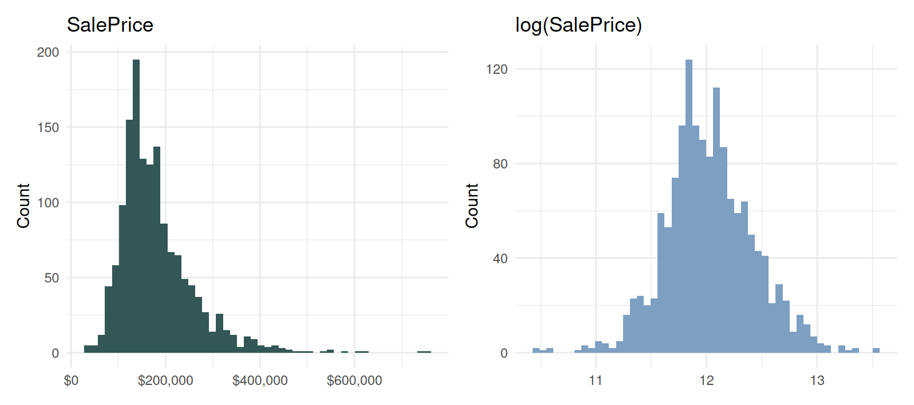
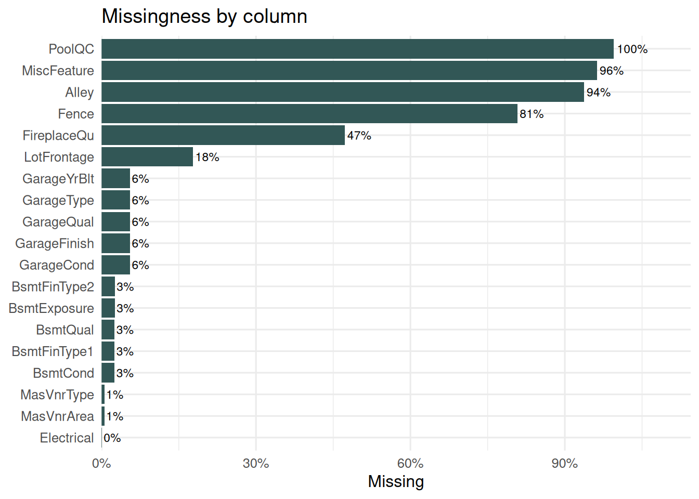
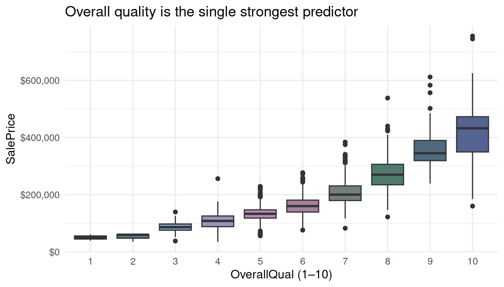
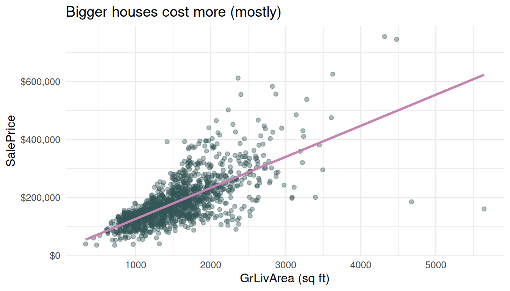
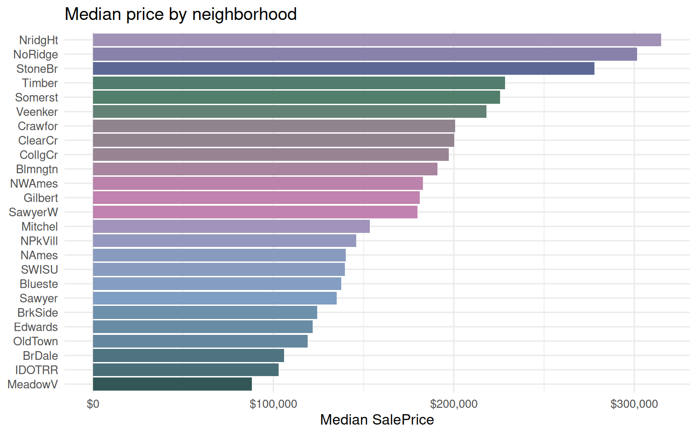
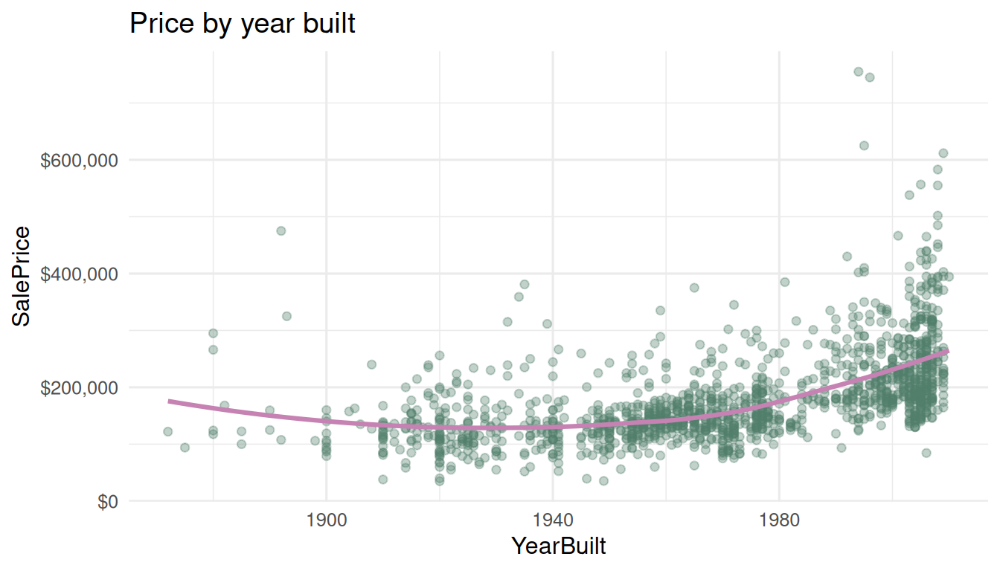

Show code
source(here::here("R", "00_setup.R"))
library(tidyverse)
library(tidymodels)
library(here)
library(skimr) # skim() — richer than summary()
library(scales) # dollar()/percent() axis + label formattingLooking before we leap — the patterns that motivate our features
Where we are: This is step one of the House Prices — Tidymodels Tour. Before fitting any model we look at the data, find the signal, and let what we see motivate the shared feature recipe in
R/02_features.R(make_recipe()) and the up-front engineering inR/03_engineer.R. Every model document downstream trains on those features.
Rows: 1,460
Columns: 12
$ Id <dbl> 1, 2, 3, 4, 5, 6, 7, 8, 9, 10, 11, 12, 13, 14, 15, 16, 17,…
$ MSSubClass <dbl> 60, 20, 60, 70, 60, 50, 20, 60, 50, 190, 20, 60, 20, 20, 2…
$ MSZoning <chr> "RL", "RL", "RL", "RL", "RL", "RL", "RL", "RL", "RM", "RL"…
$ LotFrontage <dbl> 65, 80, 68, 60, 84, 85, 75, NA, 51, 50, 70, 85, NA, 91, NA…
$ LotArea <dbl> 8450, 9600, 11250, 9550, 14260, 14115, 10084, 10382, 6120,…
$ Street <chr> "Pave", "Pave", "Pave", "Pave", "Pave", "Pave", "Pave", "P…
$ Alley <chr> NA, NA, NA, NA, NA, NA, NA, NA, NA, NA, NA, NA, NA, NA, NA…
$ LotShape <chr> "Reg", "Reg", "IR1", "IR1", "IR1", "IR1", "Reg", "IR1", "R…
$ LandContour <chr> "Lvl", "Lvl", "Lvl", "Lvl", "Lvl", "Lvl", "Lvl", "Lvl", "L…
$ Utilities <chr> "AllPub", "AllPub", "AllPub", "AllPub", "AllPub", "AllPub"…
$ LotConfig <chr> "Inside", "FR2", "Inside", "Corner", "FR2", "Inside", "Ins…
$ LandSlope <chr> "Gtl", "Gtl", "Gtl", "Gtl", "Gtl", "Gtl", "Gtl", "Gtl", "G…The Ames data has 1460 training houses described by 79 explanatory variables plus the Id and the target SalePrice. That is a lot of columns — 43 categorical, 37 numeric — so the modelling leans hard on the recipe.
p_raw <- ggplot(train, aes(x = SalePrice)) +
geom_histogram(bins = 50, fill = house_pal[1]) +
scale_x_continuous(labels = dollar) +
labs(title = "SalePrice", x = NULL, y = "Count")
p_log <- ggplot(train, aes(x = log(SalePrice))) +
geom_histogram(bins = 50, fill = house_pal[2]) +
labs(title = "log(SalePrice)", x = NULL, y = "Count")
patchwork_ok <- requireNamespace("patchwork", quietly = TRUE)
if (patchwork_ok) patchwork::wrap_plots(p_raw, p_log) else p_log
This single fact drives the whole project: prices span an order of magnitude and are right-skewed, so we model log(SalePrice). Conveniently, Kaggle scores the competition on RMSE of the log price — so training on the log scale optimises the leaderboard metric directly. range(SalePrice) is roughly $34,900 – $755,000.
train |>
summarise(across(everything(), ~ mean(is.na(.x)))) |>
pivot_longer(everything(), names_to = "variable", values_to = "pct_missing") |>
filter(pct_missing > 0) |>
ggplot(aes(x = reorder(variable, pct_missing), y = pct_missing)) +
geom_col(fill = house_pal[1]) +
geom_text(aes(label = percent(pct_missing, accuracy = 1)), hjust = -0.1, size = 3) +
scale_y_continuous(labels = percent, expand = expansion(mult = c(0, 0.15))) +
coord_flip() +
labs(title = "Missingness by column", x = NULL, y = "Missing")
The crucial Ames gotcha: for most of these columns NA does not mean “unknown”, it means “the feature is absent”. PoolQC is missing for 99.5% of houses because almost no house has a pool; Alley NA means no alley access; GarageType/BsmtQual NA means no garage/basement. Blindly imputing these would invent features that aren’t there. So R/03_engineer.R recodes them:
"None" (Alley, PoolQC, Fence, all the Bsmt/Garage quality columns, FireplaceQu, MasVnrType, MiscFeature).0 (GarageArea, GarageCars, MasVnrArea, all the basement square-footages).LotFrontage (~18%) and a handful of one-off stray NAs in the test set (MSZoning, KitchenQual, …) are truly unknown; those get KNN / median / mode imputation inside every CV fold.train |>
mutate(OverallQual = factor(OverallQual)) |>
ggplot(aes(x = OverallQual, y = SalePrice, fill = OverallQual)) +
geom_boxplot(show.legend = FALSE) +
scale_y_continuous(labels = dollar) +
labs(title = "Overall quality is the single strongest predictor",
x = "OverallQual (1–10)", y = "SalePrice")
OverallQual — the rater’s 1–10 judgement of material and finish — is the strongest single predictor in the data, and nearly log-linear against price.
ggplot(train, aes(x = GrLivArea, y = SalePrice)) +
geom_point(alpha = 0.4, colour = house_pal[1]) +
geom_smooth(method = "lm", formula = y ~ x, colour = house_pal[3], se = FALSE) +
scale_y_continuous(labels = dollar) +
labs(title = "Bigger houses cost more (mostly)",
x = "GrLivArea (sq ft)", y = "SalePrice")
Living area is strongly linear against price. The two houses bottom-right (huge but cheap) are the well-known Ames outliers — partial sales. We leave them in and let the log transform + robust models absorb them, but they are worth knowing about. This motivates the engineered TotalSF (basement + 1st + 2nd floor).
train |>
group_by(Neighborhood) |>
summarise(med = median(SalePrice), .groups = "drop") |>
ggplot(aes(x = reorder(Neighborhood, med), y = med, fill = med)) +
geom_col(show.legend = FALSE) +
scale_y_continuous(labels = dollar) +
coord_flip() +
labs(title = "Median price by neighborhood",
x = NULL, y = "Median SalePrice")
Neighborhood spreads median price roughly 3× from cheapest to dearest — a strong categorical the recipe dummy-encodes (lumping the rarest levels into "Rare").

Age matters, nonlinearly — motivating the engineered HouseAge, RemodAge, and an IsNew flag.
Everything above justifies the two-stage feature pipeline:
R/03_engineer.R (deterministic, up front): recode NA → "None"/0 for absent features; derive TotalSF, TotalBath, TotalPorchSF, HouseAge, RemodAge, and the Has*/Is* flags; treat MSSubClass as categorical.make_recipe() (estimated per CV fold): KNN-impute LotFrontage, median/mode-impute stray NAs, Yeo-Johnson the skewed numerics, lump rare factor levels, dummy-encode, normalize, and append principal components.The scale-sensitive models (neural net, SVM, elastic net) rely on the step_normalize() + step_YeoJohnson() in the recipe; the tree ensembles are scale-invariant and ignore them harmlessly.
Time to model:
---
title: "Exploratory Data Analysis"
subtitle: "Looking before we leap — the patterns that motivate our features"
---
> **Where we are:** This is step one of the
> [House Prices — Tidymodels Tour](../index.qmd). Before fitting any model we
> look at the data, find the signal, and let what we see *motivate* the shared
> feature recipe in `R/02_features.R` (`make_recipe()`) and the up-front
> engineering in `R/03_engineer.R`. Every model document downstream trains on
> those features.
## Setup
```{r}
#| label: setup
#| message: false
#| warning: false
source(here::here("R", "00_setup.R"))
library(tidyverse)
library(tidymodels)
library(here)
library(skimr) # skim() — richer than summary()
library(scales) # dollar()/percent() axis + label formatting
```
```{r}
#| label: load-data
#| message: false
# The training set is the only one with the SalePrice label, so all exploratory
# analysis happens here. We read the RAW data (pre-engineering) to see it as it
# arrives from Kaggle.
train <- read_csv(here("data", "raw", "train.csv"), show_col_types = FALSE)
glimpse(train[, 1:12])
```
The Ames data has **1460 training houses** described by **79 explanatory
variables** plus the `Id` and the target `SalePrice`. That is a lot of columns —
43 categorical, 37 numeric — so the modelling leans hard on the recipe.
## The target: SalePrice is right-skewed
```{r}
#| label: price-dist
#| fig-cap: "SalePrice (left) is right-skewed; log(SalePrice) (right) is close to normal."
#| fig-width: 9
#| fig-height: 4
p_raw <- ggplot(train, aes(x = SalePrice)) +
geom_histogram(bins = 50, fill = house_pal[1]) +
scale_x_continuous(labels = dollar) +
labs(title = "SalePrice", x = NULL, y = "Count")
p_log <- ggplot(train, aes(x = log(SalePrice))) +
geom_histogram(bins = 50, fill = house_pal[2]) +
labs(title = "log(SalePrice)", x = NULL, y = "Count")
patchwork_ok <- requireNamespace("patchwork", quietly = TRUE)
if (patchwork_ok) patchwork::wrap_plots(p_raw, p_log) else p_log
```
This single fact drives the whole project: prices span an order of magnitude and
are right-skewed, so we **model `log(SalePrice)`**. Conveniently, Kaggle scores
the competition on RMSE of the log price — so training on the log scale
optimises the leaderboard metric directly. `range(SalePrice)` is roughly
**\$34,900 – \$755,000**.
## First look: structure and missingness
```{r}
#| label: missingness
#| fig-cap: "Columns with missing values. Most 'missingness' is really absence."
#| fig-width: 7
#| fig-height: 5
train |>
summarise(across(everything(), ~ mean(is.na(.x)))) |>
pivot_longer(everything(), names_to = "variable", values_to = "pct_missing") |>
filter(pct_missing > 0) |>
ggplot(aes(x = reorder(variable, pct_missing), y = pct_missing)) +
geom_col(fill = house_pal[1]) +
geom_text(aes(label = percent(pct_missing, accuracy = 1)), hjust = -0.1, size = 3) +
scale_y_continuous(labels = percent, expand = expansion(mult = c(0, 0.15))) +
coord_flip() +
labs(title = "Missingness by column", x = NULL, y = "Missing")
```
The crucial Ames gotcha: for most of these columns **`NA` does not mean
"unknown", it means "the feature is absent"**. `PoolQC` is missing for 99.5% of
houses because almost no house has a pool; `Alley` NA means no alley access;
`GarageType`/`BsmtQual` NA means no garage/basement. Blindly imputing these
would invent features that aren't there. So `R/03_engineer.R` recodes them:
- **Categorical absent → `"None"`** (Alley, PoolQC, Fence, all the Bsmt/Garage
quality columns, FireplaceQu, MasVnrType, MiscFeature).
- **Numeric absent → `0`** (GarageArea, GarageCars, MasVnrArea, all the basement
square-footages).
- **Genuinely missing → impute in the recipe.** Only `LotFrontage` (~18%) and a
handful of one-off stray NAs in the test set (`MSZoning`, `KitchenQual`, …) are
truly unknown; those get KNN / median / mode imputation inside every CV fold.
## What predicts price?
### Overall quality
```{r}
#| label: qual
#| fig-cap: "SalePrice rises steeply and monotonically with OverallQual."
#| fig-width: 7
#| fig-height: 4
train |>
mutate(OverallQual = factor(OverallQual)) |>
ggplot(aes(x = OverallQual, y = SalePrice, fill = OverallQual)) +
geom_boxplot(show.legend = FALSE) +
scale_y_continuous(labels = dollar) +
labs(title = "Overall quality is the single strongest predictor",
x = "OverallQual (1–10)", y = "SalePrice")
```
`OverallQual` — the rater's 1–10 judgement of material and finish — is the
strongest single predictor in the data, and nearly log-linear against price.
### Living area
```{r}
#| label: area
#| fig-cap: "Above-grade living area vs price. Note the two high-area/low-price outliers."
#| fig-width: 7
#| fig-height: 4
ggplot(train, aes(x = GrLivArea, y = SalePrice)) +
geom_point(alpha = 0.4, colour = house_pal[1]) +
geom_smooth(method = "lm", formula = y ~ x, colour = house_pal[3], se = FALSE) +
scale_y_continuous(labels = dollar) +
labs(title = "Bigger houses cost more (mostly)",
x = "GrLivArea (sq ft)", y = "SalePrice")
```
Living area is strongly linear against price. The two houses bottom-right (huge
but cheap) are the well-known Ames outliers — partial sales. We leave them in and
let the log transform + robust models absorb them, but they are worth knowing
about. This motivates the engineered **`TotalSF`** (basement + 1st + 2nd floor).
### Neighborhood
```{r}
#| label: nbhd
#| fig-cap: "Median SalePrice by neighborhood — location, location, location."
#| fig-width: 8
#| fig-height: 5
train |>
group_by(Neighborhood) |>
summarise(med = median(SalePrice), .groups = "drop") |>
ggplot(aes(x = reorder(Neighborhood, med), y = med, fill = med)) +
geom_col(show.legend = FALSE) +
scale_y_continuous(labels = dollar) +
coord_flip() +
labs(title = "Median price by neighborhood",
x = NULL, y = "Median SalePrice")
```
Neighborhood spreads median price roughly 3× from cheapest to dearest — a strong
categorical the recipe dummy-encodes (lumping the rarest levels into `"Rare"`).
### Age
```{r}
#| label: age
#| fig-cap: "Newer houses sell for more; the relationship is nonlinear."
#| fig-width: 7
#| fig-height: 4
train |>
ggplot(aes(x = YearBuilt, y = SalePrice)) +
geom_point(alpha = 0.35, colour = house_pal[4]) +
geom_smooth(method = "loess", formula = y ~ x, colour = house_pal[3], se = FALSE) +
scale_y_continuous(labels = dollar) +
labs(title = "Price by year built", x = "YearBuilt", y = "SalePrice")
```
Age matters, nonlinearly — motivating the engineered **`HouseAge`**,
**`RemodAge`**, and an **`IsNew`** flag.
## What this means for the recipe
Everything above justifies the two-stage feature pipeline:
1. **`R/03_engineer.R`** (deterministic, up front): recode `NA → "None"`/`0` for
absent features; derive `TotalSF`, `TotalBath`, `TotalPorchSF`, `HouseAge`,
`RemodAge`, and the `Has*`/`Is*` flags; treat `MSSubClass` as categorical.
2. **`make_recipe()`** (estimated per CV fold): KNN-impute `LotFrontage`,
median/mode-impute stray NAs, Yeo-Johnson the skewed numerics, lump rare
factor levels, dummy-encode, normalize, and append principal components.
::: {.callout-note}
The scale-sensitive models (neural net, SVM, elastic net) rely on the
`step_normalize()` + `step_YeoJohnson()` in the recipe; the tree ensembles are
scale-invariant and ignore them harmlessly.
:::
## Next steps
Time to model:
- **[XGBoost](02-xgboost.qmd)** — start here; it establishes the template the
other docs reuse.
- Then **[Random Forest](03-random-forest.qmd)**, **[Neural Net](04-neural-net.qmd)**,
**[Elastic Net](06-elasticnet.qmd)**, **[SVM](07-svm.qmd)**, **[MARS](08-mars.qmd)**.
- Back to the **[master document](../index.qmd)** for the results table.